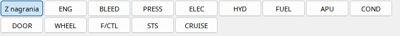

Ilustracja interfejsu z danymi demonstracyjnymi. To nie jest zapis rzeczywistego lotu.
Przyciski pod dolnym ekranem wybieraj¹ ENG, BLEED, PRESS, ELEC, HYD, FUEL, APU, COND, DOOR, WHEEL, F/CTL, STS i CRUISE. Wybór jest lokalny dla odtwarzacza: nie wysy³a komend do MSFS ani nie zmienia nagranego prze³¹cznika w kokpicie. Po rêcznej zmianie strony wartoœci nadal pod¹¿aj¹ za wspólnym czasem.
Recorded (w polskim interfejsie „Z nagrania”) przywraca stronê, któr¹ pilot mia³ wyœwietlon¹ w danej chwili, jeœli jej identyfikator zapisano. Podczas przewijania mo¿e wiêc automatycznie zmieniaæ stronê. Bez tej zmiennej nie mo¿na wiarygodnie ustaliæ wyœwietlanej strony. Rozdzia³y podrzêdne pokazuj¹ ka¿d¹ stronê osobno w czytelnym rozmiarze.
Sta³a stopka obejmuje dostêpne TAT, SAT, czas oraz gross weight. Nie wszystkie samoloty wystawiaj¹ komplet danych systemowych, a czêœæ stron mo¿e zawieraæ kreski. Wypnij ECAM, jeœli chcesz obejrzeæ schematy obok PFD.
